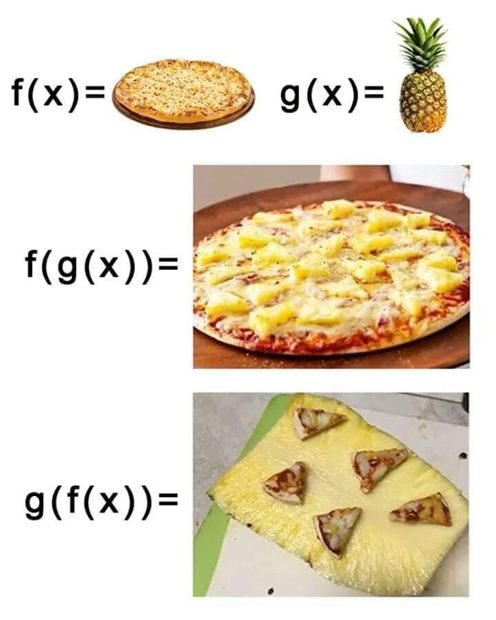
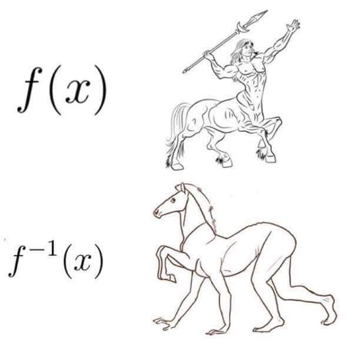

📡 Küldetés-eligazítás
📡 Petar Pauk: Kapcsoljunk össze két hálót: az első célpontja legyen a második kiindulópontja. Ezt írja le a kompozíció. Azt is megnézzük, mikor vezet minden célpontból egyértelmű út visszafelé: ekkor van inverz.
Ha két függvényt gépként képzelünk el, sorba kapcsolhatjuk őket, ha az első minden kimenete megengedett bemenet a másodiknál. Az első kimenetét adjuk a második bemenetére. Ez a kompozíció. Az inverz a hozzárendelés megfordítása: a képből az eredeti bemenetet kapjuk vissza. Ehhez bijektív függvényre van szükségünk. A már látott hőmérséklet-átváltásnál például Fahrenheit-értékből is meghatározhatjuk a Celsius-értéket.
Kompozíció (összetétel)
Az ábrán az \(x\) bemenet először az \(f\) gépbe kerül. A kapott \(f(x)\) értéket adjuk a \(g\) gép bemenetére. A gépsor kimenete \(g(f(x))\), azaz \((g\circ f)(x)\).
📗 Definíció — kompozíció
Adott \(f:A\to B\) és \(g:B\to C\). A kompozíciójuk az a \(g\circ f:A\to C\) függvény, amelyre✏️ Szimuláció — lineáris
Legyen \(f,g:\mathbb{R}\to\mathbb{R}\), \(f(x)=2x-1\) és \(g(x)=x+4\).\((f\circ g)(x)=f(g(x))=2\cdot (x+4)-1=2x+7\)
\((g\circ f)(x)=g(f(x))=(2x-1)+4=2x+3\)
⚠️ Vigyázz — a kompozíció általában nem cserélhető fel!
Általában \(f\circ g \neq g\circ f\). A sorrend számít: nem mindegy, melyik gépbe teszed előbb a bemenetet.
Kompozíció véges halmazon
Ha a függvényeket rendezett párok adják meg, lépésről lépésre követjük a nyilakat. Legyen \(A=\{1,2,3,4\}\), \(f,g:A\to A\), \(f=\{(1,2),(2,4),(3,1),(4,3)\}\), \(g=\{(1,3),(2,1),(3,2),(4,4)\}\). Ekkor \((f\circ g)(x)=f(g(x))\):
| \(x\) | \(g(x)\) | \(f(g(x))\) |
|---|---|---|
| 1 | 3 | 1 |
| 2 | 1 | 2 |
| 3 | 2 | 4 |
| 4 | 4 | 3 |
Tehát \(f\circ g=\{(1,1),(2,2),(3,4),(4,3)\}\).
🎯 Gyors kérdés
Kvíz — \(f(x)=x+3\), \(g(x)=2x\). Mennyi \((g\circ f)(x)\)?
Levezetés
Gyakorolj! Válaszd a bevetésed: (kompozíció képlettel és véges halmazon, inverz meghatározása)
Az inverz függvény
Az inverz a függvény értékéhez az eredeti bemenetet rendeli.
📗 Definíció — identikus leképezés
Az \(id:A\to A\), \(id(x)=x\) az identikus (azonos) leképezés: mindent önmagára képez.📗 Definíció — inverz
Ha \(f:A\to B\) bijektív, akkor pontosan egy olyan \(f^{-1}:B\to A\) függvény van, amelyre⚠️ Kán csapdája
Az \(f^{-1}\) jelölés az inverzt jelöli, nem a reciprokot. Az \(f(x)=2x-6\) inverze a valós számok halmazán \(f^{-1}(x)=\dfrac{x}{2}+3\), a reciprokfüggvény pedig \(\dfrac{1}{2x-6}\), amely csak \(x\ne3\) esetén értelmezhető. A két hozzárendelés különböző függvény.
⚠️ Fontos feltétel
Csak bijektív függvénynek van inverze — és a két feltétel két különböző dolgot biztosít:
- Injektív → a visszafejtés egyértelmű. Ha nem az, két őselemből ugyanaz a kép jönne, és nem tudnánk, melyikre menjünk vissza.
- Szürjektív → a visszafejtés elvégezhető \(B\) minden elemére. Ha nem az, maradna \(B\)-ben olyan elem, amihez nincs mit visszarendelni — ott az inverz nem lenne értelmezve.
Bijektív esetben \(B\) pontosan az \(f\) értékkészlete, ezért \(f^{-1}:B\to A\) értelmezési tartománya éppen \(R_{f}\).
Az inverz kiszámítása (lineáris esetben)
✏️ Módszer + példa
Határozzuk meg az \(f:\mathbb{R}\to\mathbb{R}\), \(f(x)=2x-6\) függvény inverzét.- Írd fel \(y=2x-6\) alakban.
- Cseréld fel a változókat: \(x=2y-6\).
- Fejezd ki \(y\)-t: \(2y=x+6 \Rightarrow y=\frac{x}{2}+3\).
Grafikus kép: tükrözés az \(y=x\) egyenesre
A függvény és az inverze grafikonja egymás tükörképe az \(y=x\) egyenesre. Az alábbi ábrán a korábbi kompozíciós példából ismert \(f:\mathbb{R}\to\mathbb{R}\), \(f(x)=2x-1\) függvényt használjuk; ennek inverze \(f^{-1}(x)=\frac{x+1}{2}\).
A kék egyenes az eredeti függvény grafikonja: a bemenet kétszereséből egyet vonunk ki. A rózsaszín az inverzé: a bemenethez egyet adunk, majd kettővel osztunk. A szaggatott egyenes pontjaiban a két koordináta egyenlő; ez a tükrözés tengelye. A jelölt pont mindkét koordinátája egy, és mindkét grafikonon rajta van. A két koordinátatengely léptéke azonos.

Rokon technika: függvényegyenletek
Néha nem közvetlenül \(f(x)\)-et adják meg, hanem pl. \(f(3x-1)=6x-8\) alakban. A trükk: helyettesítés.
✏️ Kiképzési szimuláció
Legyen \(f:\mathbb{R}\to\mathbb{R}\), és teljesüljön \(f(3x-1)=6x-8\) minden valós \(x\)-re. Vezessük be az új változót: legyen \(t=3x-1\), ekkor \(x=\frac{t+1}{3}\). Behelyettesítve: \(f(t)=6\cdot \frac{t+1}{3}-8=2(t+1)-8=2t-6\). Tehát \(f(x)=2x-6\).Inverz véges halmazon
Rendezett pároknál egyszerűen megfordítjuk a párokat. Legyen \(A=B=\{1,2,3,4,5\}\). Ha a \(f:A\to B\) függvény \(f=\{(1,4),(2,1),(3,5),(4,2),(5,3)\}\) (bijektív), akkor \(f^{-1}=\{(4,1),(1,2),(5,3),(2,4),(3,5)\}\), azaz rendezve \(f^{-1}=\{(1,2),(2,4),(3,5),(4,1),(5,3)\}\).
🎯 Gyors kérdés
Mi az \(f:\mathbb{R}\to\mathbb{R}\), \(f(x)=3x+6\) függvény inverze?
Levezetés
Gyakorolj: Alapszint 5., Középszint 3. (inverz képlettel, táblázattal, bijektivitás bizonyítása, függvényegyenletek).
🧾 Gyorsismétlő
A leglényegesebb egy helyen — vizsga előtt erre pillants rá.
Jelölések
| Jel | Jelentés |
|---|---|
| \(f:A\to B\) | f leképezés A-ból B-be |
| \(y=f(x)\) | az x képe (helyettesítési érték) |
| \(D_{f}\) / \(R_{f}\) | értelmezési tartomány / értékkészlet |
| \(g\circ f\) | kompozíció: \((g\circ f)(x)=g(f(x))\) |
| \(f^{-1}\) | inverz (csak bijektív függvénynek) |
Kulcsötletek
- Függvény: minden őselemhez pontosan egy kép.
- Injektív = nincs ütközés; szürjektív = \(B\) minden eleme kép (azaz \(R_f=B\)); bijektív = mindkettő → van inverz.
- Kompozíció: a \(g\circ f\) jelölésben először az \(f\), majd a \(g\) függvényt alkalmazzuk. A sorrend általában számít. Az \(f^{-1}\circ f\) az \(A\) halmazon, az \(f\circ f^{-1}\) a \(B\) halmazon identikus leképezés.
- Inverz: \(y=f(x)\) → változócsere → fejezzük ki \(y\)-t. Grafikonja tükörkép az \(y=x\)-re.
💡 Példa — visszafejthető betűcsere
Készítsünk egyszerű titkosírást betűcserével: ugyanannak az ábécének a betűit rendeljük egymáshoz úgy, hogy különböző betűknek különböző képe legyen, és minden betű szerepeljen képként. Ez bijekció. A visszafejtéshez az inverz hozzárendelést használjuk. Ha két különböző betűt ugyanarra cserélnénk, a kapott jelből már nem tudnánk egyértelműen megállapítani az eredeti betűt.📘 Tantervi kapcsolódás
\(\text{MAT}.F.SO.O.1.8\) (8.1, 8.2) — egyszerű függvények és tulajdonságaik; kapcsolódó középszint \(\text{MAT}.A.SO.S.1.3\) (3.3). Alapszint (O) + a középszint (S) alsó sávja.1e · matematika Függvények Sok sikert! 🍀
📡 Petar Pauk: Az Igazság-szektort lezártad, kadét — ez volt az első nagy blokk! SZVETI szerint készen állsz a minősítő vizsgára, és utána Barton Kálmán vár a Célzóban.